Даты предварительные и утверждаются среди оставивших заявки
Море перемен
Даты предварительные и утверждаются среди оставивших заявки
Недельное путешествие на яхте по островам Греции, полная перезагрузка и обновление
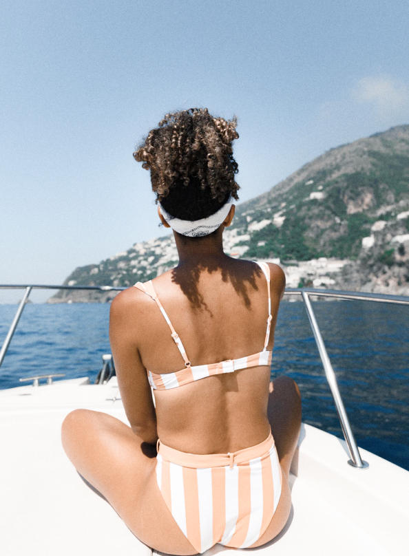
Необычное приключение
Побег от повседневности на яхте, посещение самобытных городков и безлюдных островов
Only women
Лёгкое общение в компании, где ты — своя
Полный релакс
Отключись от текущих проблем, спешки и рутины — потрать время на себя — своё тело и свою душу
Коучинговая программа
Размышляй, трансформируйся, лови инсайты под руководством — коуча Анастасии Нявчук
Невозможно красиво
Почувствуй себя кинозвездой, запечатлей на фото окружающую красоту и приятные моменты... и взорви свой инстаграм!
Программа
1час
личной консультации
Три направления, которые в комплексе создадут новую тебя
01
Тело
Отдых и релаксация
Утренние занятия спортом
Прогулки по островам и местным городкам
Вегетарианское меню
Танцевальная арт-терапия для проработки телесных зажимов
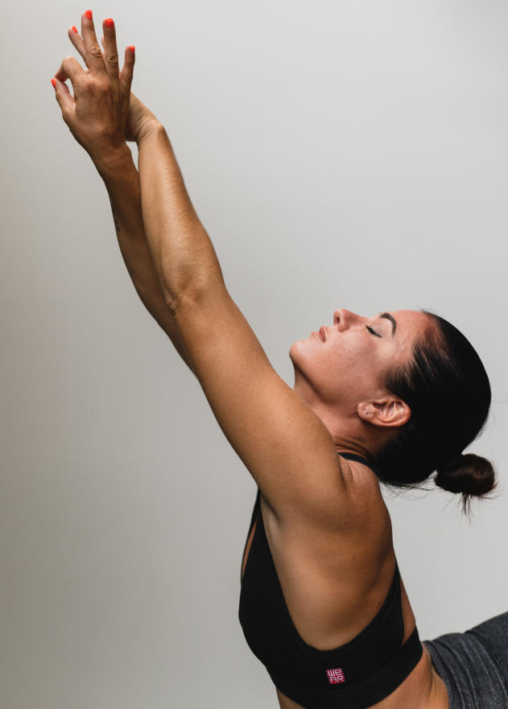
Программа
1час
личной консультации
Три направления, которые в комплексе создадут новую тебя
02
Ум
Проработка целей и жизненных стремлений
Познание себя через новую карту знаний интегрального мышления
Вечерний sharing с инсайтами
Неспешные беседы на заданные темы
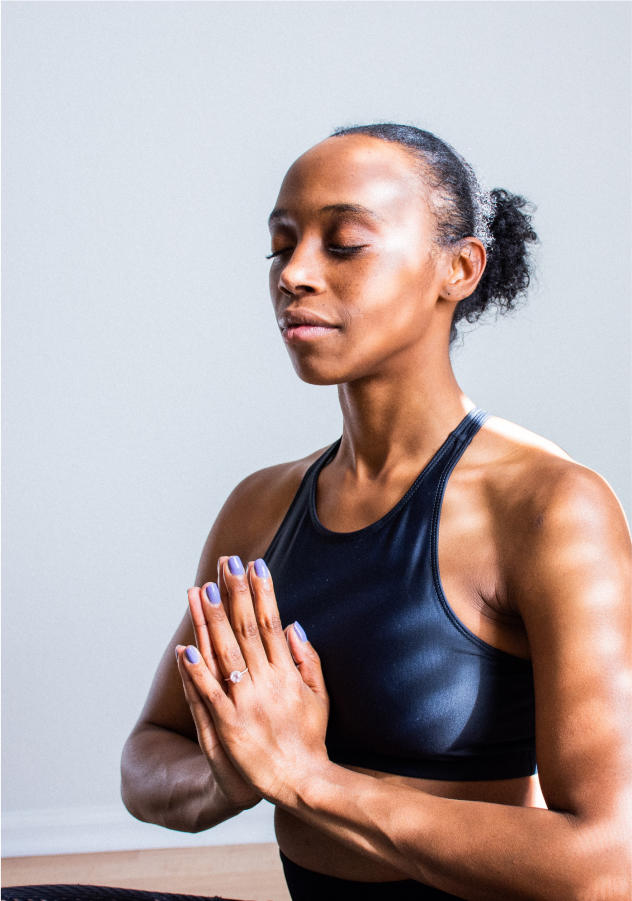
Программа
1час
личной консультации
Три направления, которые в комплексе создадут новую тебя
03
Дух
Ежедневные медитации и беседы о собственных метаморфозах
Проработка страхов, которые препятствуют лёгкости жизненного пути
Трансформационная игра «Танцующая с волками» на проработку женских архетипов
Женские разговоры на сокровенные темы
Проработка отношений — прошлых и настоящих
День познания себя (тестирование, типология личности, уровни спиральной динамики)
День Випассаны (без телефонов и книг, в полном молчании и созерцании)
День группового коучинга на тему самореализации
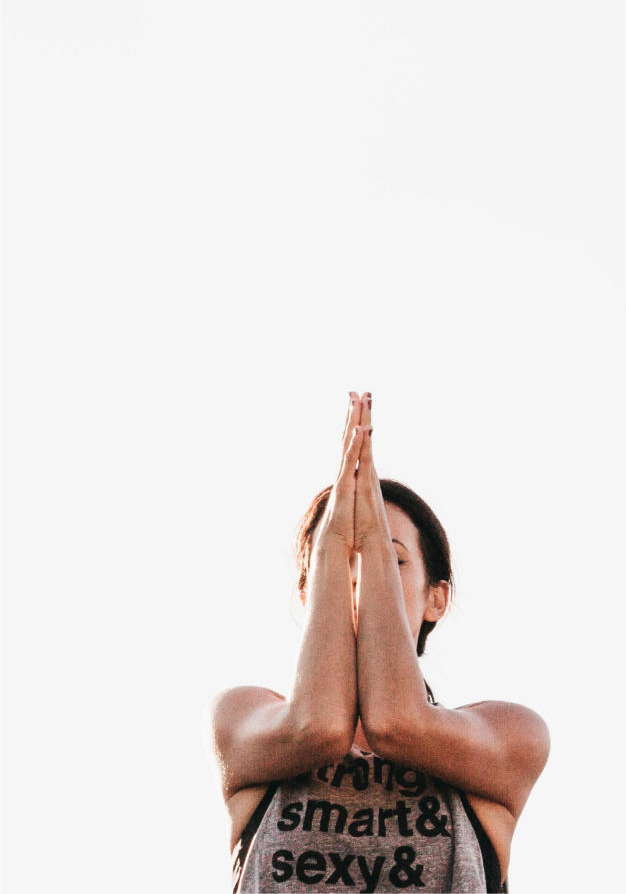
1300€
до 25 сентября
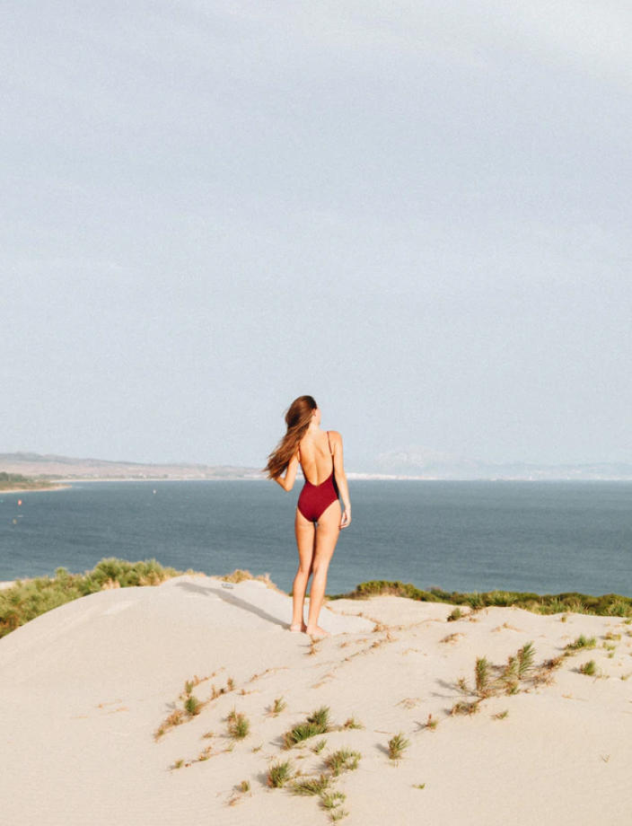
1100€
если с подругой
Проживание на новой комфортабельной яхте в двухместной каюте
Двухразовое питание на яхте — завтраки и обеды, которые мы приготовим вместе
Яхтенные сборы, стоянки в портах, топливные расходы
В стоимость не входят виза, авиаперелёт и трансфер в Афинах, а также личные покупки.
Меня зовут Анастасия Нявчук
«Будущее — это результат того, что я делаю в настоящем»
Нявчук
5 лет работы коучем
Владею рядом техник от интегральной психологии до трансформационного коучинга, от медитативных практик до метафорических техник.
Международное образование
Получила сертификат PROFESSIONAL COACH ICU в Международном институте коучинга.
Владелец бизнеса в фитнес-индустрии
Построила карьеру в фитнес-индустрии и открыла свой филиал клуба. В 24 года у меня уже была семья, ребёнок и карьера — все, о чем можно мечтать.
Вы считаете, что коуч — это та же профессия, что и психолог? Убеждены, что лучше вас самих вам никто не поможет? Я смогу изменить ваше мнение.
Каждый день мы с клиентами находим ответы на вопросы поиска себя, своих целей и предназначения.
Во время ретрита на яхте я не просто поделюсь с вами своими знаниями и открытиями — я помогу сделать так, чтобы у вас получилось то, что вы задумали — успешно созидать свою жизнь и управлять ей.
Помогу вам мечтать, дерзать, вдохновлять и верить в себя!
Маршрут
Афины
Мы начинаем путешествие яхтенной марине Афин, откуда мы отправимся по морю на катамаране excess 11. Мы будем курсировать между островами и побережьями Саронического залива.
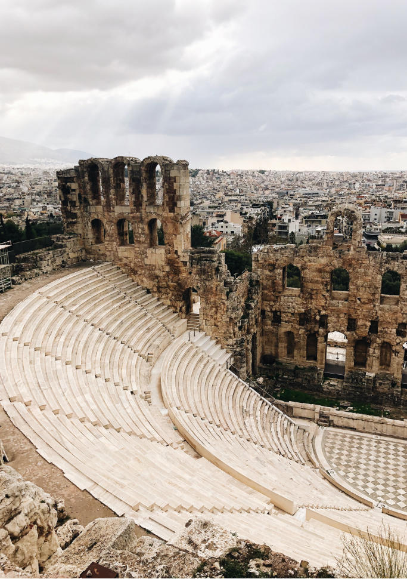
Мони
Крошечный необитаемый остров, единственными постоянными жителями которого являются лишь дикие козы, да и то, настолько ручные, что спокойно принимают еду прямо из рук.
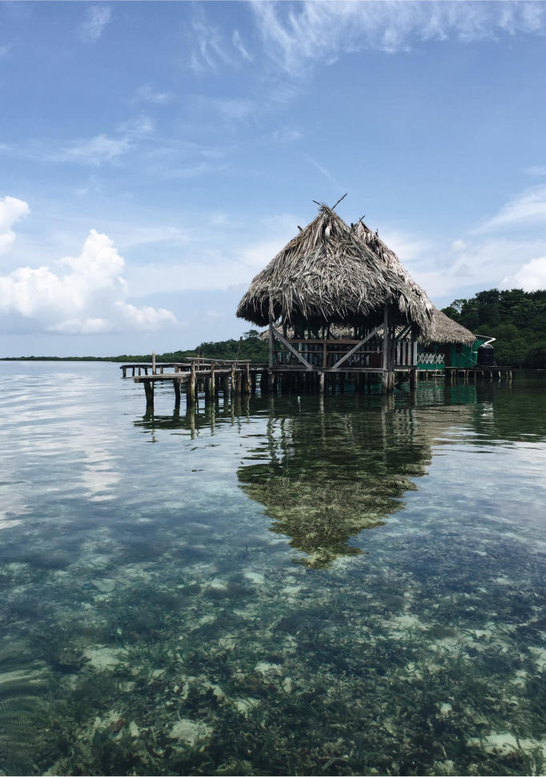
Эпидаврос
Поселение славится древним театром с потрясающей акустикой, а также руинами под водой — даже с любительским снаряжением для подводного плавания можно нырять и рассматривать их.
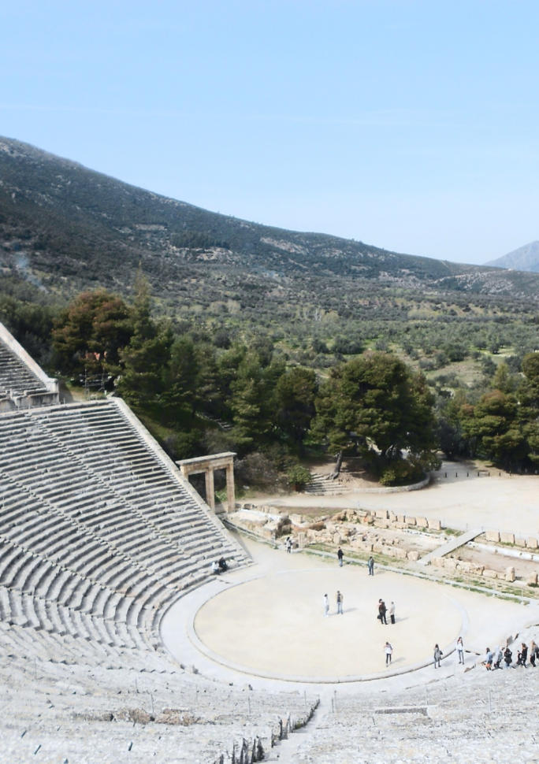
Порос
Яхтенная гавань острова располагается в живописном узком проливе. Порос — остров, утопающий в зелени и очень красивый. Здесь можно посетить развалины храма Посейдона, женский монастырь Жизнетворного Источника, лимонный лес и Дьявологефиро (это не только мост сатаны, но и знаменитые ворота в ад).
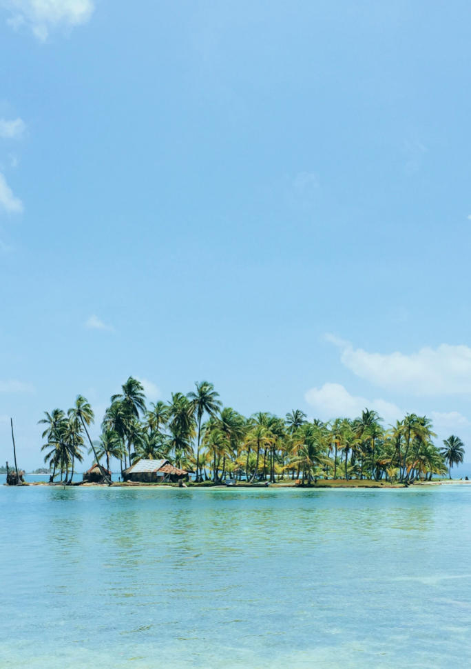
Идра
В северной части острова из гавани ведёт живописная мощёная дорога, с которой можно попасть на смотровые площадки. А по южной набережной можно пройтись над обрывистым берегом мимо древних башен и пушек. Во время заката такая прогулка подарит неизгладимые впечатления.
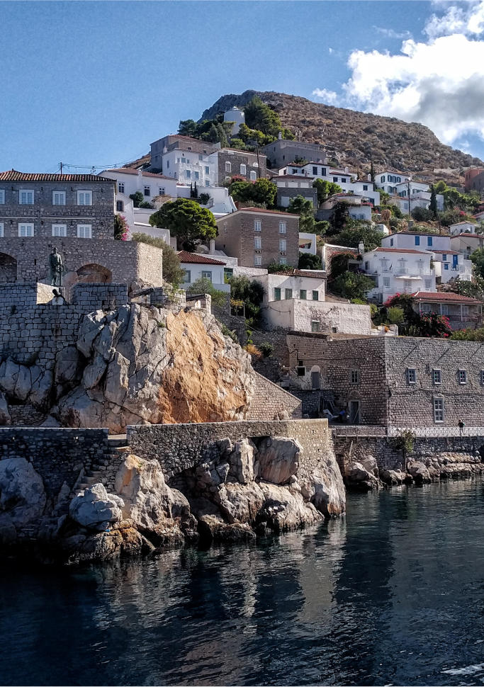
Докос
Это изолированное место идеально для единения с природой и отдыха от шумного мегаполиса. Главная его достопримечательность — древний затонувший корабль. Здесь можно посмотреть руины античного города, крепость Кастро, церковь Святого Николая и маяк.
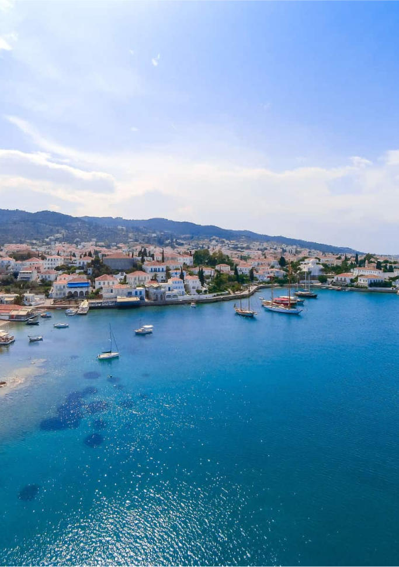
Эрмиони
Самый самобытный и живописный из населённых пунктов всего Пелопоннеса. Здесь каждый найдёт себе что-нибудь по душе: венецианский замок Фермисиас, заповедник Лимнокастро Фермисиас, византийская церковь Святой Троицы и красивейший сосновый бор Бисти.
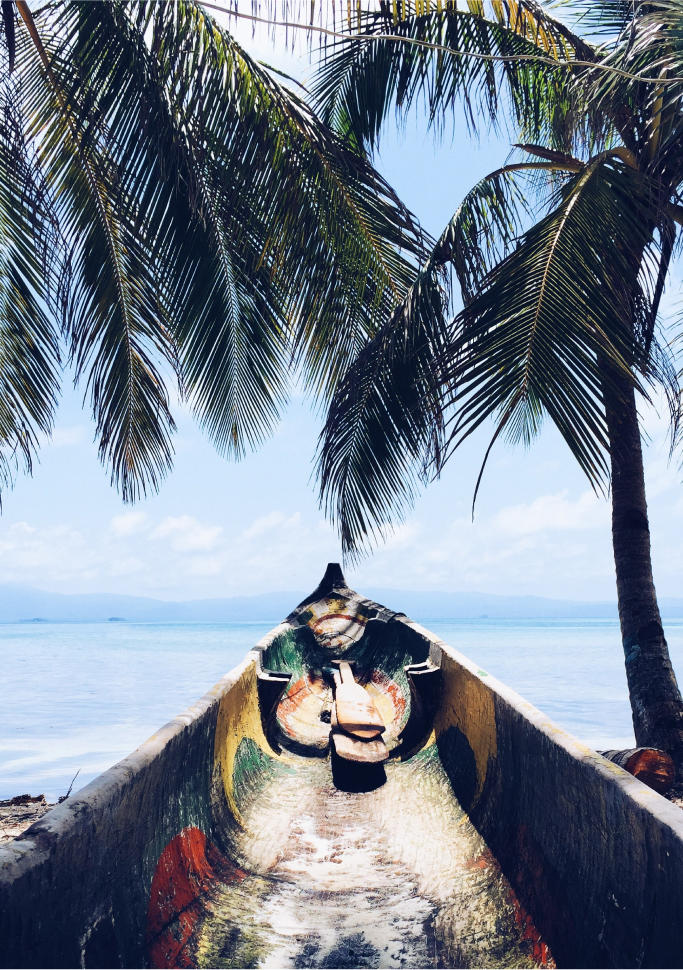
Метана
Здесь зафиксировано приблизительно 32 вулкана. Из 25 трещин в горе изливаются термальные источники. Вдоль побережья расположены небольшие сероводородные ванны, в которых могут нежиться все желающие.
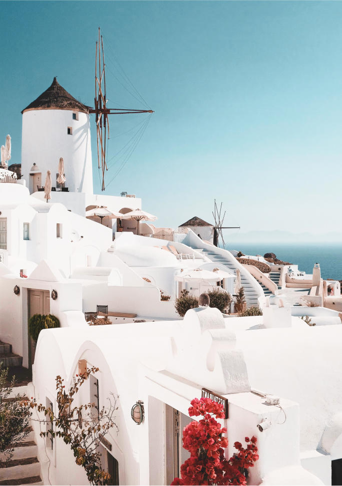
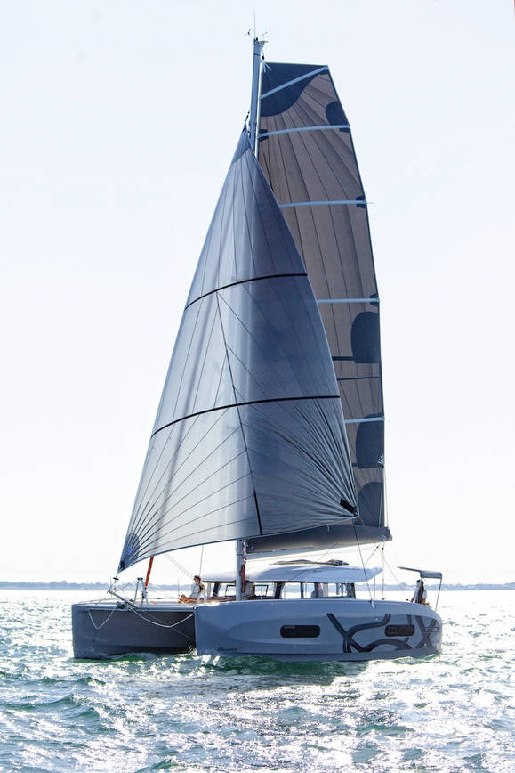
Путешествие происходит на excess 11
Путешествие происходит на excess 11
Этот катамаран имеет четыре двухместные каюты, просторную гостиную с обеденным столом, полностью оборудованную кухню, закрытую заднюю террасу с зонтиком и открытый обеденный стол на 8 человек.
А также у лодки две ванные комнаты, которые доступны из коридора, с туалетом и душем. Они питаются из 600-литровых резервуаров с пресной прохладной водой и котла с горячей водой на 60 литров.
Нужно ли что-то обязательно брать с собой?
Купальники и хорошее настроение!:) Конечно, не забывай про солнцезащитный крем и солнечные очки, а также головные уборы.
Будет трансфер из аэропорта до яхтенной марины?
Трансфера не будет, так как все участницы будут прилетать в разное время. Но я гарантирую предоставление чётких инструкций, как добраться до яхты!
Что если необходимо специальное питание?
Всё питание на яхте будет вегетарианским, но ты сможешь самостоятельно докупать себе необходимые продукты в местных магазинах и на рынках. Эти расходы не входят в стоимость тура.
Есть ли связь и интернет?
Конечно же, у тебя будет возможность звонить и выходить в интернет, но я настоятельно рекомендую отказаться от гаджетов для получения полной перезагрузки!
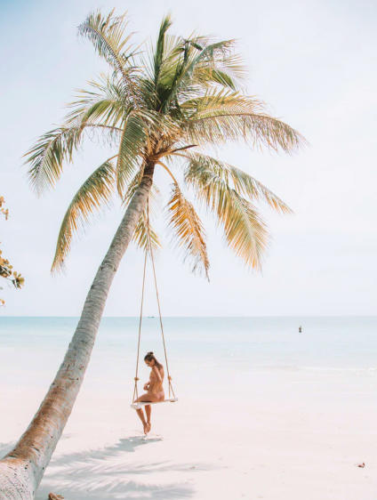
Оставь заявку на участие
Или забронируй своё место в туре по телефону +380954890840